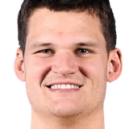

His best final NBA finish was #4 of 30, with the 2019-20 Denver Nuggets. In his 386 games for 4 teams over 8 seasons they went 206–180 (53.4%), +26 games over .500, with an average final finish of 12.1. The biggest one-season rise in his career: the Minnesota Timberwolves went from #25 in 2020-21 to #12 in 2021-22.
Jump to: Record by opponent · Season by season · Teammate help
Compare Jarred Vanderbilt with…
Suggested, same era and similar teammate help:


Final NBA finish, season by season
Title Finals Other playoffs Missed playoffs. #1 = champion; the dashed line is last place that season. Each point opens that season's final standings.
All 30 teams ranked in 2019-20, his best finish (#4)Teammate help
 Nikola Jokic9.02 seasons
Nikola Jokic9.02 seasons LeBron James8.03 seasons
LeBron James8.03 seasons Anthony Davis6.02 seasons
Anthony Davis6.02 seasons
Seasons with help 3.8 to 6.2 (4): best finish #4 of 30, 2019-20, worst #10 of 30, 2024-25.
Career
Career records (W–L, W − L, with and without) include 2026-27 games through Nov. 21, 2026; season counts and finishes are through 2025-26. Each card opens its board in the same scope. How we count.

With and without his teammates
His 12 teammates with the most regular-season games together. "Together" is the team's record in the games both played for it; "Without him" is the team's record in the games Jarred Vanderbilt played for that team while the teammate was on it (between the teammate's first and last game for the team, the appearance span) and the teammate did not play. Fewer than 20 games without him: no gap. Games through Nov. 21, 2026. How we count.
 Malik Beasley
Malik Beasley Denver 2018-19 to 2019-20;
Denver 2018-19 to 2019-20;  Minnesota 2019-20 to 2021-22;
Minnesota 2019-20 to 2021-22;  LA Lakers 2022-23;
LA Lakers 2022-23;  Utah 2022-23
Utah 2022-23- Together
- 105–105 50.0%
- Without him
- 4–11 26.7%
- Gap
- Too few games without him
 D'Angelo RussellMinnesota 2019-20 to 2021-22; LA Lakers 2022-23 to 2023-24
D'Angelo RussellMinnesota 2019-20 to 2021-22; LA Lakers 2022-23 to 2023-24- Together
- 73–65 52.9%
- Without him
- 17–37 31.5%
- Gap
- 21.4 points lower

- Together
- 57–78 42.2%
- Without him
- 3–2 60.0%
- Gap
- Too few games without him
 Anthony EdwardsMinnesota 2020-21 to 2021-22
Anthony EdwardsMinnesota 2020-21 to 2021-22- Together
- 53–79 40.2%
- Without him
- 6–0 100.0%
- Gap
- Too few games without him
 Austin ReavesLA Lakers 2022-23 to 2026-27
Austin ReavesLA Lakers 2022-23 to 2026-27- Together
- 83–47 63.8%
- Without him
- 17–12 58.6%
- Gap
- 5.2 points lower
 Jaden McDanielsMinnesota 2020-21 to 2021-22
Jaden McDanielsMinnesota 2020-21 to 2021-22- Together
- 51–69 42.5%
- Without him
- 8–10 44.4%
- Gap
- Too few games without him
 Rui HachimuraLA Lakers 2022-23 to 2025-26
Rui HachimuraLA Lakers 2022-23 to 2025-26- Together
- 77–42 64.7%
- Without him
- 19–18 51.4%
- Gap
- 13.4 points lower
 Karl-Anthony TownsMinnesota 2019-20 to 2021-22
Karl-Anthony TownsMinnesota 2019-20 to 2021-22- Together
- 55–57 49.1%
- Without him
- 5–21 19.2%
- Gap
- 29.9 points lower
- LeBron JamesLA Lakers 2022-23 to 2025-26
- Together
- 68–41 62.4%
- Without him
- 18–15 54.5%
- Gap
- 7.8 points lower
 Jordan McLaughlinMinnesota 2019-20 to 2021-22
Jordan McLaughlinMinnesota 2019-20 to 2021-22- Together
- 46–57 44.7%
- Without him
- 14–23 37.8%
- Gap
- 6.8 points lower
 Jaxson HayesLA Lakers 2023-24 to 2025-26
Jaxson HayesLA Lakers 2023-24 to 2025-26- Together
- 63–39 61.8%
- Without him
- 12–12 50.0%
- Gap
- 11.8 points lower
 Josh OkogieMinnesota 2019-20 to 2021-22
Josh OkogieMinnesota 2019-20 to 2021-22- Together
- 36–63 36.4%
- Without him
- 24–17 58.5%
- Gap
- 22.2 points higher
Latest completed seasons
2026-27 so far
Games through Nov. 21, 2026, the last game in the nightly data. These games are already in his career records above (W–L, win %, W − L, with and without, all marked "incl. 2026-27"). Season counts, final finishes and teammate help use completed seasons through 2025-26; 2026-27 joins them when the season ends.
| Team | His games | With him | Without him | Gap | On/off per 100 | Started / bench | Close games |
|---|---|---|---|---|---|---|---|
| 12 | 10–2 83.3% | 4–1 80.0% | +3.3 | −5.4 | N/A / 10–2 | 2–0 |
Season by season
Newest first; every header sorts. Final NBA finish is the team's rank among all teams that season (#1 = champion) and opens that season's standings. "Without him" uses the team-season window; the span line counts only the games between his first and last game for the team.
| 2025-26 | #6 of 30 | 53–29 64.6% | Lost conf semis 0–4 | 65 of 82 | 39–26 60.0% | 14–3 82.4%span: 14–3, gap −22.4 | −22.4 | |
| 2024-25 | #10 of 30 | 50–32 61.0% | Lost 1st round 1–4 | 36 of 82 | 25–11 69.4% | 25–21 54.3%span: 1–2, gap +36.1 | +15.1 | |
| 2023-24 | #13 of 30 | 47–35 57.3% | Lost 1st round 1–4 | 29 of 82 | 14–15 48.3% | 33–20 62.3%span: 0–1, gap +48.3 | −14.0 | |
| 2022-23 | #22 of 30 | 37–45 45.1% | Missed playoffs | 52 of 82 | 25–27 48.1% | 3–2 60.0%span: 2–0, gap −51.9 | −11.9 | |
| 2022-23 | #4 of 30 | 43–39 52.4% | Lost conf finals 0–4 | 26 of 82 | 18–8 69.2% | 0–3 0.0%span: N/A, gap N/A | +69.2 | |
| 2021-22 | #12 of 30 | 46–36 56.1% | Lost 1st round 2–4 | 74 of 82 | 41–33 55.4% | 5–3 62.5%span: 5–3, gap −7.1 | −7.1 | |
| 2020-21 | #25 of 30 | 23–49 31.9% | Missed playoffs | 64 of 72 | 18–46 28.1% | 5–3 62.5%span: 3–3, gap −21.9 | −34.4 | |
| 2019-20 | #4 of 30 | 46–27 63.0% | Lost conf finals 1–4 | 9 of 73 | 5–4 55.6% | 31–12 72.1%span: 27–11, gap −15.5 | −16.5 | |
| 2019-20 | #28 of 30 | 19–45 29.7% | Missed playoffs | 2 of 64 | 1–1 50.0% | 3–10 23.1%span: 0–1, gap +50.0 | +26.9 | |
| 2018-19 | #5 of 30 | 54–28 65.9% | Lost conf semis 3–4 | 17 of 82 | 10–7 58.8% | 44–21 67.7%span: 12–6, gap −7.8 | −8.9 |
On/off, starts and close games
From the lineup data, 1996-97 on. On/off is net points per 100 possessions with him on the floor minus off, a different unit from the win-rate gaps. Started and off the bench are team records in those games; close games are those within 5 points in the last 5 minutes with him on the floor.
| 2025-26 | −0.5 | 1–2 33.3% | 38–24 61.3% | 4–2 66.7% | |
| 2024-25 | −4.0 | 0–2 0.0% | 25–9 73.5% | 3–5 37.5% | |
| 2023-24 | +9.4 | 3–3 50.0% | 11–12 47.8% | 4–2 66.7% | |
| 2022-23 | −6.3 | 18–23 43.9% | 7–4 63.6% | 7–10 41.2% | |
| 2022-23 | −11.3 | 17–7 70.8% | 1–1 50.0% | 5–6 45.5% | |
| 2021-22 | +5.4 | 39–28 58.2% | 2–5 28.6% | 15–10 60.0% | |
| 2020-21 | +7.2 | 9–21 30.0% | 9–25 26.5% | 7–11 38.9% | |
| 2019-20 | −25.3 | N/A | 5–4 55.6% | N/A | |
| 2019-20 | −106.5 | N/A | 1–1 50.0% | 0–1 0.0% | |
| 2018-19 | +0.2 | N/A | 10–7 58.8% | N/A |
Teammate help by season
Two separate numbers per season, each with every teammate that adds to it. Help this season = Teammates Score points for honors won that season by teammates who shared a game with him. Help coming in = the same teammates' honors from the season before. How help works.
- 2026-27LA LakersHelp this season: pending (honors are awarded after the season)
Help coming in (2025-26 honors of teammates he has played with so far): 5 = 5 Luka Doncic
- 2025-26LA Lakers
 Luka Doncic All-NBA 1stAll-Star549 gLeBron James All-Star145 g
Luka Doncic All-NBA 1stAll-Star549 gLeBron James All-Star145 g
Help this season: 6+ = 5 Luka Doncic + 1 LeBron James
More: help coming in and other teammates
Help coming in (teammates' honors the season before): 4+ = 4 LeBron James
Other teammates (no honors that season): Jake LaRavia 65 g, Deandre Ayton 56 g, Marcus Smart 51 g, Rui Hachimura 51 g, Jaxson Hayes 49 g, Dalton Knecht 45 g, Bronny James 35 g, Maxi Kleber 35 g, Austin Reaves 34 g, Nick Smith 27 g, Drew Timme 24 g, Luke Kennard 24 g, Gabe Vincent 20 g, Adou Thiero 16 g and 3 more
- 2024-25LA Lakers
LeBron James All-NBA 2ndAll-Star429 gAnthony Davis All-Star12 g
Help this season: 5 = 4 LeBron James + 1 Anthony Davis
More: help coming in and other teammates
Help coming in (teammates' honors the season before): 13 = 5 Luka Doncic + 5 Anthony Davis + 3 LeBron James
Other teammates (no honors that season): Austin Reaves 34 g, Dalton Knecht 32 g, Jaxson Hayes 32 g, Gabe Vincent 32 g, Dorian Finney-Smith 32 g, Luka Doncic 28 g, Jordan Goodwin 26 g, Rui Hachimura 20 g, Shake Milton 19 g, Trey Jemison 17 g, Bronny James 12 g, Christian Koloko 12 g, Alex Len 8 g, Markieff Morris 6 g and 3 more
- 2023-24LA Lakers
Anthony Davis All-NBA 2ndAll-StarAll-Def 1st526 gLeBron James All-NBA 3rdAll-Star324 g
Help this season: 8 = 5 Anthony Davis + 3 LeBron James
More: help coming in and other teammates
Help coming in (teammates' honors the season before): 3 = 3 LeBron James
Other teammates (no honors that season): Austin Reaves 29 g, Taurean Prince 28 g, D'Angelo Russell 25 g, Max Christie 24 g, Christian Wood 24 g, Rui Hachimura 23 g, Jaxson Hayes 21 g, Cam Reddish 18 g, Jalen Hood-Schifino 12 g, Maxwell Lewis 9 g, Skylar Mays 5 g, Dylan Windler 3 g, Colin Castleton 2 g, D'Moi Hodge 1 g and 1 more
- 2022-23Utah
 Lauri Markkanen All-StarMIP1.2547 g
Lauri Markkanen All-StarMIP1.2547 g
Walker Kessler All-Rookie 1st0.2549 gHelp this season: 1.5 = 1.25 Lauri Markkanen + 0.25 Walker Kessler
More: help coming in and other teammates
Help coming in (teammates' honors the season before): 0
Other teammates (no honors that season): Malik Beasley 52 g, Jordan Clarkson 51 g, Kelly Olynyk 40 g, Mike Conley 40 g, Talen Horton-Tucker 39 g, Collin Sexton 39 g, Rudy Gay 37 g, Nickeil Alexander-Walker 34 g, Ochai Agbaji 30 g, Simone Fontecchio 25 g, Udoka Azubuike 17 g, Leandro Bolmaro 12 g, Micah Potter 3 g
- 2022-23LA Lakers
LeBron James All-NBA 3rdAll-Star311 g
Help this season: 3 = 3 LeBron James
More: help coming in and other teammates
Help coming in (teammates' honors the season before): 3 = 3 LeBron James
Other teammates (no honors that season): Austin Reaves 26 g, Troy Brown 26 g, Malik Beasley 26 g, Wenyen Gabriel 25 g, Rui Hachimura 25 g, Dennis Schroeder 24 g, Anthony Davis 24 g, Lonnie Walker 17 g, D'Angelo Russell 17 g, Mo Bamba 9 g, Davon Reed 8 g, Max Christie 7 g, Cole Swider 1 g
- 2021-22Minnesota
Karl-Anthony Towns All-NBA 3rdAll-Star369 g
Help this season: 3 = 3 Karl-Anthony Towns
More: help coming in and other teammates
Help coming in (teammates' honors the season before): 0.25 = 0.25 Anthony Edwards
Other teammates (no honors that season): Naz Reid 71 g, Malik Beasley 71 g, Anthony Edwards 68 g, Taurean Prince 65 g, Jaden McDaniels 63 g, D'Angelo Russell 59 g, Patrick Beverley 56 g, Jordan McLaughlin 56 g, Jaylen Nowell 54 g, Josh Okogie 43 g, Nathan Knight 31 g, Leandro Bolmaro 31 g, Jake Layman 29 g, McKinley Wright 5 g and 1 more
- 2020-21Minnesota
Anthony Edwards All-Rookie 1st0.2564 g
Help this season: 0.25 = 0.25 Anthony Edwards
More: help coming in and other teammates
Help coming in (teammates' honors the season before): 0
Other teammates (no honors that season): Naz Reid 62 g, Ricky Rubio 60 g, Jaden McDaniels 57 g, Josh Okogie 54 g, Jordan McLaughlin 45 g, Juan Hernangomez 44 g, Karl-Anthony Towns 42 g, Jaylen Nowell 40 g, Jake Layman 40 g, D'Angelo Russell 36 g, Malik Beasley 33 g, Jarrett Culver 26 g, Ed Davis 22 g, Ashton Hagans 2 g
- 2019-20Denver
Nikola Jokic All-NBA 2ndAll-Star49 g
Help this season: 4 = 4 Nikola Jokic
More: help coming in and other teammates
Help coming in (teammates' honors the season before): 5 = 5 Nikola Jokic
Other teammates (no honors that season): Jerami Grant 9 g, Torrey Craig 9 g, Monte Morris 9 g, Malik Beasley 9 g, Will Barton 8 g, Juan Hernangomez 8 g, Gary Harris 6 g, Michael Porter 6 g, Vlatko Cancar 5 g, PJ Dozier 5 g, Jamal Murray 5 g, Mason Plumlee 4 g, Paul Millsap 4 g
- 2019-20MinnesotaHelp this season: 0, no honored teammate
More: help coming in
Help coming in (teammates' honors the season before): 2 = 1 Karl-Anthony Towns + 1 D'Angelo Russell
- 2018-19Denver
Nikola Jokic All-NBA 1stAll-Star515 g
Help this season: 5 = 5 Nikola Jokic
More: help coming in and other teammates
Help coming in (teammates' honors the season before): 0
Other teammates (no honors that season): Mason Plumlee 17 g, Will Barton 17 g, Monte Morris 17 g, Malik Beasley 17 g, Torrey Craig 16 g, Jamal Murray 16 g, Gary Harris 15 g, Paul Millsap 15 g, Juan Hernangomez 15 g, Trey Lyles 9 g, Isaiah Thomas 8 g, Tyler Lydon 5 g, Thomas Welsh 2 g
Record against each opponent
- Best regular-season record against one franchise: 15–5 (75.0%) against the New Orleans Pelicans in 20 games.
- Toughest regular-season record against one franchise: 10–11 (47.6%) against the LA Clippers in 21 games.
- Most playoff series against one franchise: 2 against the Memphis Grizzlies, 1–1 in series and 6–6 in games.
Regular season, through 2025-26 (2026-27 games not included): 374 games, 196–178, against 30 franchises.
Grouped by franchise (named as today); game lists keep each team's name that season. Filters and the tab are kept in the URL, so a filtered view can be shared.
| Games list | |||||||
|---|---|---|---|---|---|---|---|
| 23 | 13–10 | 56.5% | +3 | 1–0 (4–2 in games) | 2018-19 to 2025-26 | ||
| 21 | 10–11 | 47.6% | −1 | N/A | 2018-19 to 2025-26 | ||
| 20 | 15–5 | 75.0% | +10 | N/A | 2019-20 to 2025-26 | ||
| 19 | 11–8 | 57.9% | +3 | 1–0 (3–2 in games) | 2018-19 to 2025-26 | ||
| 18 | 10–8 | 55.6% | +2 | 1–1 (6–6 in games) | 2019-20 to 2025-26 | ||
| 18 | 9–9 | 50.0% | 0 | N/A | 2018-19 to 2025-26 | ||
| 17 | 11–6 | 64.7% | +5 | N/A | 2018-19 to 2025-26 | ||
| 17 | 10–7 | 58.8% | +3 | 0–1 (0–2 in games) | 2018-19 to 2025-26 | ||
| 17 | 9–8 | 52.9% | +1 | N/A | 2018-19 to 2025-26 | ||
| 15 | 7–8 | 46.7% | −1 | 0–1 (0–3 in games) | 2020-21 to 2025-26 | ||
| 14 | 9–5 | 64.3% | +4 | N/A | 2018-19 to 2025-26 | ||
| 13 | 4–9 | 30.8% | −5 | N/A | 2020-21 to 2025-26 | ||
| 13 | 7–6 | 53.8% | +1 | 1–0 (1–2 in games) | 2018-19 to 2025-26 | ||
| 12 | 8–4 | 66.7% | +4 | 0–1 (1–4 in games) | 2018-19 to 2025-26 | ||
| 11 | 5–6 | 45.5% | −1 | N/A | 2019-20 to 2025-26 | ||
| 10 | 5–5 | 50.0% | 0 | N/A | 2018-19 to 2025-26 | ||
| 10 | 5–5 | 50.0% | 0 | N/A | 2020-21 to 2025-26 | ||
| 9 | 2–7 | 22.2% | −5 | N/A | 2020-21 to 2025-26 | ||
| 9 | 3–6 | 33.3% | −3 | N/A | 2018-19 to 2025-26 | ||
| 9 | 5–4 | 55.6% | +1 | N/A | 2018-19 to 2022-23 | ||
| 9 | 4–5 | 44.4% | −1 | N/A | 2020-21 to 2025-26 | ||
| 8 | 4–4 | 50.0% | 0 | N/A | 2019-20 to 2025-26 | ||
| 8 | 6–2 | 75.0% | +4 | N/A | 2018-19 to 2025-26 | ||
| 8 | 5–3 | 62.5% | +2 | N/A | 2018-19 to 2025-26 | ||
| 8 | 3–5 | 37.5% | −2 | N/A | 2020-21 to 2025-26 | ||
| 8 | 3–5 | 37.5% | −2 | N/A | 2020-21 to 2025-26 | ||
| 8 | 3–5 | 37.5% | −2 | N/A | 2020-21 to 2025-26 | ||
| 8 | 5–3 | 62.5% | +2 | N/A | 2020-21 to 2025-26 | ||
| 7 | 2–5 | 28.6% | −3 | N/A | 2018-19 to 2025-26 | ||
| 7 | 3–4 | 42.9% | −1 | N/A | 2020-21 to 2025-26 |
Rows add up to his career record in his games. A playoff series counts when he played in it; early round-robin games show as games only. How we count.
Playoffs, with and without him
| 2025-26 | Lost in the conference semifinals 0–4 to | #6 of 30 | 7 of 10 | 3–4 42.9% | 1–2 33.3% | +9.5 | |
| 2024-25 | Lost in the first round 1–4 to | #10 of 30 | 5 of 5 | 1–4 20.0% | N/A | N/A | |
| 2022-23 | Lost in the conference finals 0–4 to | #4 of 30 | 15 of 16 | 8–7 53.3% | 0–1 0.0% | +53.3 | |
| 2021-22 | Lost in the first round 2–4 to | #12 of 30 | 6 of 6 | 2–4 33.3% | N/A | N/A | |
| 2018-19 | Lost in the conference semifinals 3–4 to | #5 of 30 | 3 of 14 | 1–2 33.3% | 6–5 54.5% | −21.2 |
Arrival and departure
Team wins per 82 games the season before he arrived vs his first season there, and his last season vs the season after he left. He leaves a team only when his next season with games is for another team (or he never plays again); whole seasons he missed and came back from are one "Missed" row with the team's record without him. Per 82 so short seasons compare fairly. These are team records, not a measure of what he did.
| Left | after 2022-23 | 2022-23: 37–45 37.0 per 82 | 2023-24: 31–51 31.0 per 82 without him | −6.0 wins | |
| Arrived | 2022-23 | 2021-22: 49–33 49.0 per 82 | 2022-23: 37–45 37.0 per 82 | −12.0 wins | |
| Arrived | 2022-23 | 2021-22: 33–49 33.0 per 82 | 2022-23: 43–39 43.0 per 82 | +10.0 wins | |
| Left | after 2021-22 | 2021-22: 46–36 46.0 per 82 | 2022-23: 42–40 42.0 per 82 without him | −4.0 wins | |
| Left | after 2019-20 | 2019-20: 46–27 51.7 per 82 | 2020-21: 47–25 53.5 per 82 without him | +1.9 wins | |
| Arrived | 2019-20 | 2018-19: 36–46 36.0 per 82 | 2019-20: 19–45 24.3 per 82 | −11.7 wins | |
| Debut | 2018-19 | 2017-18: 46–36 46.0 per 82 | 2018-19: 54–28 54.0 per 82 | +8.0 wins |
Seasons split between teams
Each team's record before his first game for it, inside his window (games with and without him) and after his last game, in the seasons he played for two or more teams.
Best duos
Team record in regular-season games both played, top 10 by win %, at least 50 games together.
 Dalton Knecht
50–27 64.9%
Dalton Knecht
50–27 64.9%- Rui Hachimura
77–42 64.7%
 Gabe Vincent
34–19 64.2%
Gabe Vincent
34–19 64.2%- Austin Reaves
77–46 62.6%
- LeBron James
68–41 62.4%
- Luka Doncic
48–29 62.3%
- Jaxson Hayes
63–39 61.8%
- Anthony Davis
32–20 61.5%
 Marcus Smart
31–20 60.8%
Marcus Smart
31–20 60.8% Jake LaRavia
39–26 60.0%
Jake LaRavia
39–26 60.0%